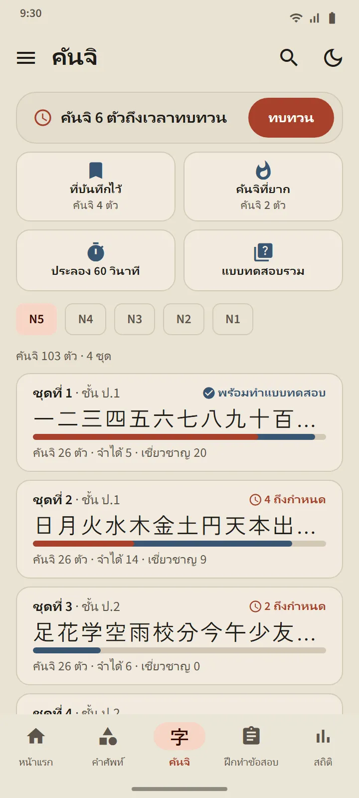
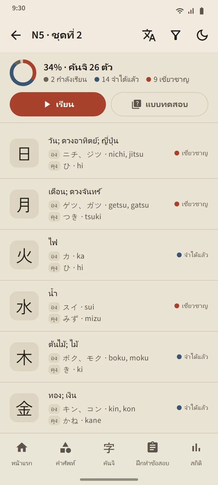
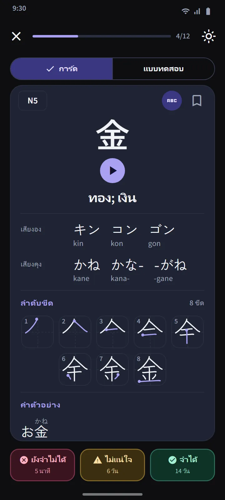
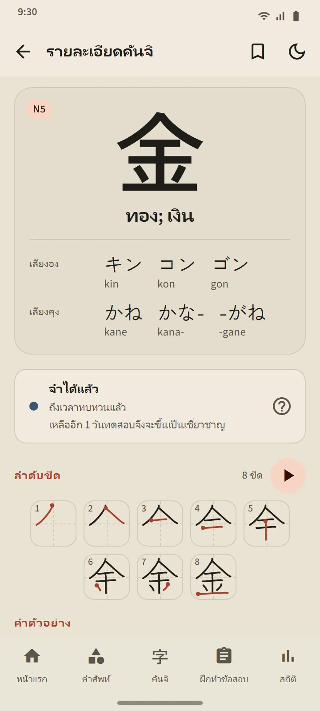
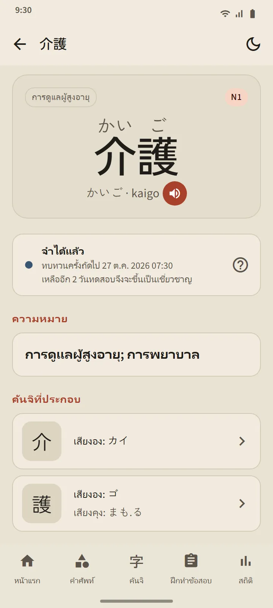
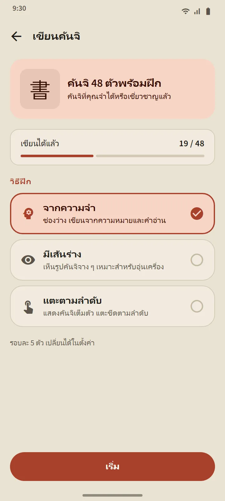
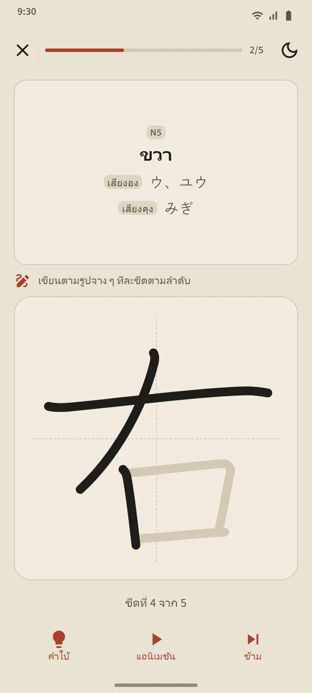

ชุดละ 25 ตัว เรียงตามลำดับของโรงเรียนญี่ปุ่น
แท็บคันจิแบ่งตามระดับ JLPT แล้วแบ่งเป็นชุดละประมาณ 25 ตัว ภายในแต่ละระดับ ลำดับเป็นไปตามหลักสูตรโรงเรียนญี่ปุ่น (ชั้นประถมปีที่ 1 ก่อน) จากนั้นเรียงตามจำนวนขีดจากน้อยไปมาก ส่วนชุดที่ต้องเรียนต่อเนื่องกัน เช่น ตัวเลข ชื่อวันในสัปดาห์ และฤดูกาล จะเรียงไว้ด้วยกัน แถวของแต่ละชุดแสดงตัวคันจิ แถบความคืบหน้า จำนวนที่จำได้แล้วและเชี่ยวชาญ และป้าย “พร้อมทำแบบทดสอบ” หรือจำนวนที่ถึงกำหนด
| ระดับ | คันจิ | การเข้าถึง |
|---|---|---|
| N5 | 103 | ฟรี |
| N4 | 181 | Premium |
| N3 | 370 | Premium |
| N2 | 369 | Premium |
| N1 | 1,207 | Premium |


การ์ดและแบบทดสอบคันจิ
ด้านหน้าของการ์ดเป็นตัวคันจิล้วน ๆ ด้านหลัง: ความหมาย คำอ่านออนและคุน (พร้อมโรมาจิถ้าต้องการ) แผนภาพลำดับขีด ที่มีหนึ่งภาพต่อหนึ่งขีดและทำเครื่องหมายจุดเริ่มต้น และคำตัวอย่างที่ใช้คันจิตัวนั้น ปุ่มสามปุ่มเดียวกับการ์ดคำศัพท์ใช้จัดตารางทบทวนใหม่
แบบทดสอบของชุดจะเปิดเมื่อมีคันจิที่จำได้แล้วหรือเชี่ยวชาญ 10 ตัว มีคำถามสามแบบ: จากคันจิเป็นความหมาย จากความหมายเป็นคันจิ และจากคันจิเป็นคำอ่าน กฎของขั้นเชี่ยวชาญก็เหมือนกัน คือตอบถูกในแบบทดสอบใน 3 วันที่ต่างกัน ทบทวนคันจิ ที่ด้านบนของแท็บรวมคันจิที่ถึงกำหนดจากทุกชุด และแบบทดสอบรวมจะทดสอบข้ามชุด

รายละเอียดคันจิและชุดพิเศษ
หน้ารายละเอียดของคันจิแต่ละตัวมีความหมาย ขั้นและการทบทวนครั้งถัดไป คำอ่าน แผนภาพลำดับขีด และคำตัวอย่าง ส่วนหน้ารายละเอียดของคำศัพท์จะลิงก์ไปยังคันจิส่วนประกอบ เช่นเดียวกับคำศัพท์ คันจิก็มีชุด ที่บันทึกไว้ คันจิที่ยาก และ ประลอง 60 วินาที และสวิตช์ในส่วนฝึกแบบเร็วของหน้าแรกจะสลับสี่ช่องนั้นเป็นเวอร์ชันคันจิ


เขียนคันจิด้วยนิ้ว
คันจิที่คุณจำได้แล้วหรือเชี่ยวชาญแล้วฝึกด้วยการเขียนได้: จะแสดงเฉพาะความหมายและคำอ่าน คุณเขียนทีละขีด และทุกขีดจะถูกตรวจทั้งรูปทรง ทิศทาง และลำดับ โดยไม่ต้องเชื่อมต่ออินเทอร์เน็ต มีสามโหมด: จากความจำ มีเส้นร่าง และ แตะตามลำดับ คันจิจะนับว่า “เขียนได้แล้ว” เมื่อคุณเขียนจากความจำโดยไม่มีตัวช่วยใน 2 วันที่ต่างกัน


รู้จักคันจิ
บทเรียนสั้น 11 บทว่าคันจิทำงานอย่างไร ก่อนเริ่มจำ: เสียงองและเสียงคุงและเมื่อใดใช้แต่ละแบบ โอคุริงานะ เสียงที่เปลี่ยน เช่น っ และเรนดาคุ คำอ่านที่จำทั้งคำ ส่วนประกอบ (บุชุ) และลำดับขีด เปิดจากส่วน "พื้นฐานภาษาญี่ปุ่น" ในหน้าแรก และใช้ได้ฟรี
แหล่งข้อมูล
ความหมายและคำอ่านมาจาก KANJIDIC (Electronic Dictionary Research and Development Group) และลำดับขีดมาจาก KanjiVG ทั้งสองอยู่ภายใต้สัญญาอนุญาต CC BY-SA ระดับของคันจิเป็นค่าประมาณจากรายการ JLPT เก่า JLPT ปัจจุบันไม่ได้เผยแพร่รายการคันจิอย่างเป็นทางการ